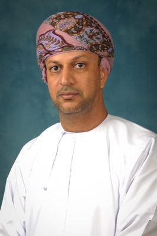
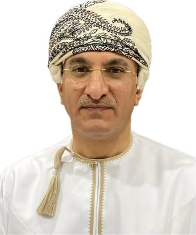
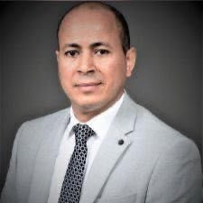
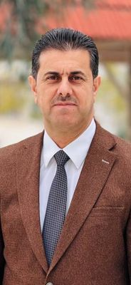
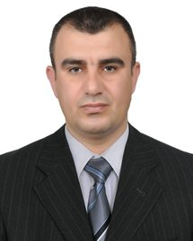
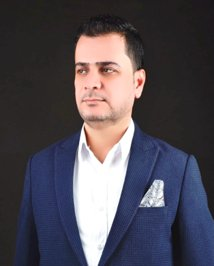
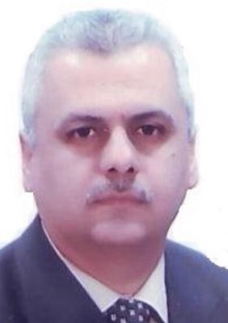
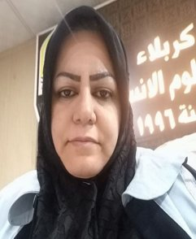
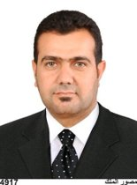

Prof. Hussain Ali Alkharusi
Research Interests
- Educational Assessment
- Scale Development and Standardization
- Teacher Education
- Student Motivation and Learning
Professional Experience
- Assistant Deputy-Vice Chancellor for Academic Affairs, Sultan Qaboos University (2022–Present)
Country: Sultanate of Oman
Assistant Deputy-Vice Chancellor for Academic Affairs, Sultan Qaboos University, Oman
Scientific Identifiers
Anne Speckhard
Research Interests
Professional Experience
Country: USA
[Administrative Role]
Scientific Identifiers
Prof. Dr. Said Boujraf
Research Interests
Professional Experience
Country: Morocco
[Administrative Role]
Scientific Identifiers

Prof. Dr. Ali bin Mahdi bin Kazem
Research Interests
- Measurement and Evaluation
- Statistical Analysis
- Research Methodology
Professional Experience
- Professor, Department of Psychology, College of Education, Sultan Qaboos University (2013–Present)
- Associate Professor, Department of Psychology, College of Education, SQU (2005–2012)
- Assistant Professor, Department of Psychology, College of Education, SQU (2000–2004)
Country: Sultanate of Oman
Professor, Department of Psychology, College of Education, Sultan Qaboos University, Oman
Scientific Identifiers

Prof. Dr. Yasser Fathy El-Hendawy
Research Interests
Professional Experience
Country: Egypt
[Administrative Role]
Scientific Identifiers
Prof. Dr. Ahmed Hassan Hamdan
Research Interests
Professional Experience
Country: United Arab Emirates
[Administrative Role]
Scientific Identifiers

Asst. Prof. Fouad Mohammed Fareeh
Research Interests
Professional Experience
Country: Iraq
College of Education for Humanities, University of Anbar, Anbar, Iraq
Scientific Identifiers

Prof. Dr. Yasser Khalaf Rashid Ali Al-Shujairi
Research Interests
- Teaching Methods
- Curricula
- Educational Programs
- Certified Trainer (TOT), Ministry of Higher Education and Scientific Research
Professional Experience
- Head of the Department of Educational and Psychological Sciences, College of Education for Humanities, University of Anbar (Current)
- Assistant Dean for Scientific Affairs and Postgraduate Studies (2019–2024)
- Head of the Department of Educational and Psychological Sciences (2016–2019)
- Secretary of the University Council (2015–2016)
- Assistant Dean for Student Affairs (2011–2015)
- Editor-in-Chief, Anbar University Journal for Humanities (2011–2013)
Country: Iraq
Head of the Department of Educational and Psychological Sciences, College of Education for Humanities, University of Anbar, Iraq
Scientific Identifiers

Prof. Dr. Haider Hatem Falih Al-Ajrash
Research Interests
- Education
- Psychology Teaching Methods
Professional Experience
- Professor, University of Babylon (Current Position)
- 20 years of academic service under the Ministry of Higher Education and Scientific Research
Country: Iraq
College of Basic Education, University of Babylon, Babylon, Iraq
Scientific Identifiers

Prof. Dr. Asso Saleh Saeed Ali
Research Interests
Professional Experience
Country: Iraq
Ministry of Higher Education and Scientific Research, Iraq
Scientific Identifiers

Prof. Dr. Awras Hashim Baiwi Al-Jubouri
Research Interests
- Educational and Psychological Sciences
Professional Experience
- Lecturer, Department of Educational and Psychological Sciences, College of Education for Human Sciences, University of Karbala (Current)
- Head of the Department of Educational and Psychological Sciences, University of Karbala (2004–2011, 2021–2023)
- Department of Educational and Psychological Sciences, University of Karbala (2001–2004)
- Director of Continuing Education, University of Karbala (2001–2004)
- Director of the Female Dormitory, University of Karbala (2016–2018)
Country: Iraq
College of Education for Humanities, University of Kerbala, Kerbala, Iraq
Scientific Identifiers
Prof. Dr. Saadi Jasim Atiyah
Research Interests
Professional Experience
Country: Iraq
College of Basic Education, Al-Mustansiriyah University, Baghdad, Iraq
Scientific Identifiers

Prof. Dr. Khalid Jamal Jasim
Research Interests
- Developmental Psychology
- Applied Psychology
- Educational Psychology
Professional Experience
Country: Iraq
Ibn Rushd College of Education, University of Baghdad, Baghdad, Iraq
Scientific Identifiers